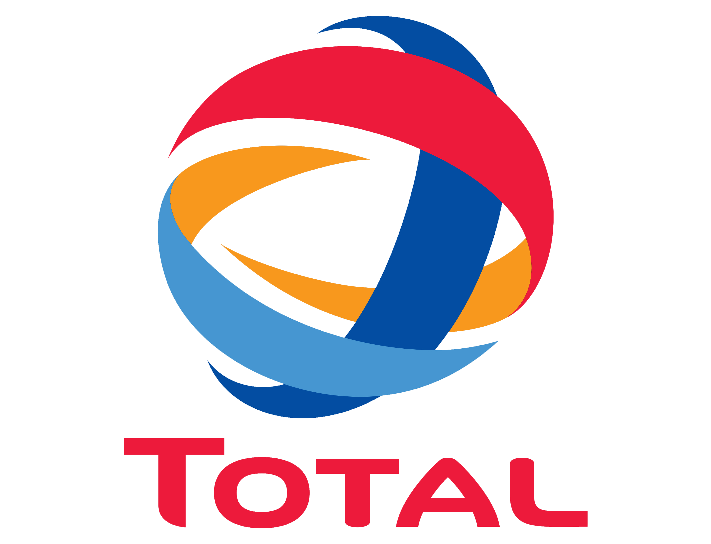
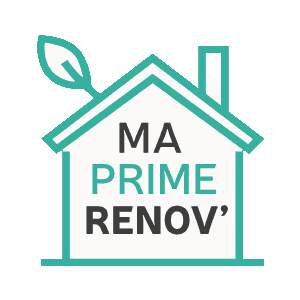
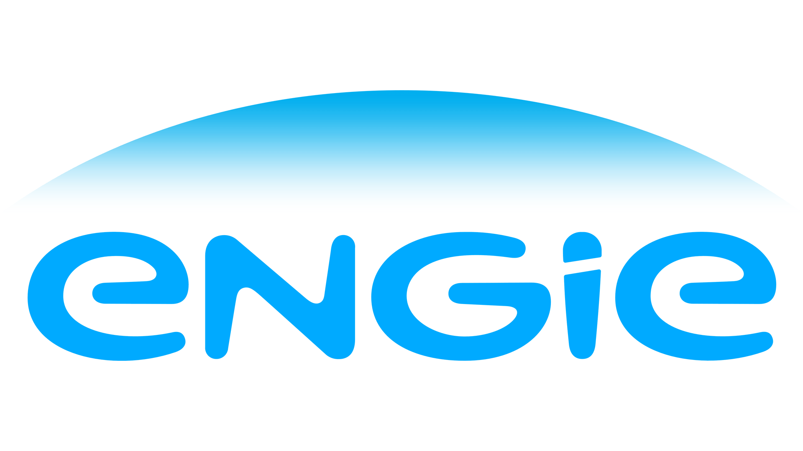
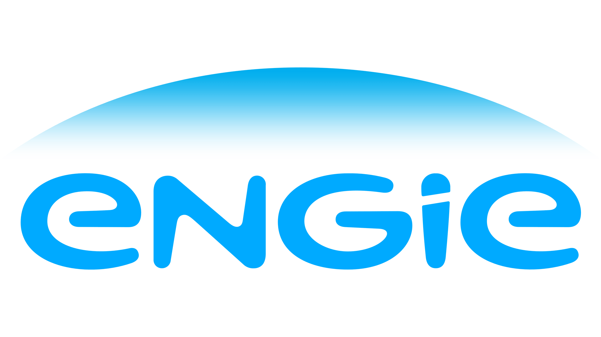

Nos partenaires qui financent vos projets


 

Renouvelez l'air pollué de votre maison, et diminuez votre consommation de chauffage.
TESTER MON ÉLIGIBILITÉ CONTACTER UN EXPERTLa VMC (Ventilation mécanique contrôlée) double flux présente une double fonctionnalité. Elle permet à la fois de chasser l'humidité, l'air pollué de votre maison mais également de renouveler l'air intérieur. Cette seconde fonctionnalité permet ainsi une réduction de votre facture énergétique pouvant aller jusqu'à 30%. En effet, avec son échangeur thermique, les déperditions de chaleur sont considérablement allégées par rapport aux déperditions des versions classiques de VMC.
La pompe à chaleur est sûrement le système de chauffage par excellence pour votre logement. Elle capte les calories présentes à l'extérieur dans l'air, l'eau ou le sol et les transforme afin d'assurer un confort thermique. Ainsi, 80% de l'énergie produite est écologique et entièrement gratuite.
Elle ne nécessite que peu d'électricité pour fonctionner étant donné qu'elle puise son énergie dans l'environnement.
Le poêle à granulés est un appareil de chauffage écologique extrêmement efficace. Les granulés sont fabriqués en recyclant les sciures de bois qui se trouvent être une ressource naturelle renouvelable avec un faible impact sur l'environnement.
De plus, cet appareil est extrêmement performant : le rendement moyen d'un poêle à granulés est compris entre 85 et 98%.
Fonctionnant de manière automatique, le poêle à granulés fait partie des modes de chauffage les moins chers du marché.
Des questions sur nos équipements, service ou demande de devis ?
Vous pouvez remplir ce formulaire pour toutes demandes afin de recevoir une réponse rapide de notre équipe.
copyright 2022 Y ENRJ. Tous droits réservés.